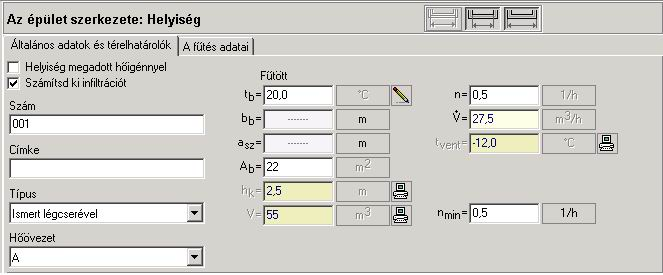
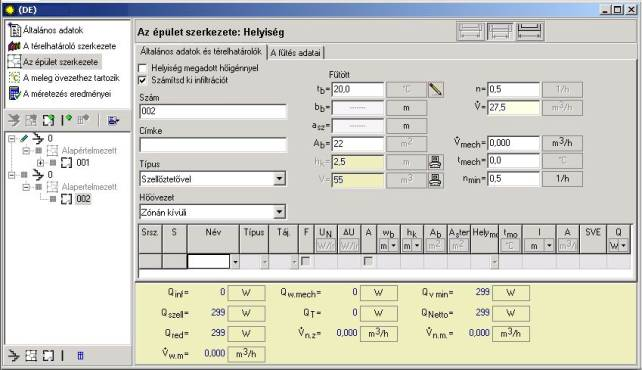
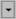
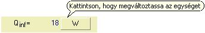

4.5.3. Helyiségek leírása - új helyiségek létrehozása, és általános adataik
A lakásnak az épületstruktúrába való beillesztése és adatainak megadása után a felhasználónak lehetõsége nyílik helyiség beillesztésére. Ezt a "Helyiség hozzáadása" menünek a felbukkanó menübõl való meghívásával teheti meg, vagy a "Menü kibontása" gomb felhasználásával, vagy Ctr+F7 billentyûkombináció alkalmazásával. Természetesen a helyiség beillesztésére az épület struktúrájának fájában is lehetõség van a gomb segítségével.
A helyiség leírása a szint leírásához hasonlóan kerül meghívásra, az épület struktúrájának fájában a kiválasztott helyiségre kattintva. A helyiség szerkesztésének ablaka az "Általános adatok, és térelhatárolók" könyvjelzõn nyílik meg. A másik, a "Fûtési adatok" könyvjelzõ különbözõ fûtési módokra, valamint/vagy a lakás egyéb helyiségeire vonatkozó hõeloszlásra vonatkozik. Itt a felhasználó elõzetesen megadhatja a radiátorokat is a helyiségben. További információ ebben a témában az 4.5.5.fejezetben található.
4.5.3.1. A helyiség általános adatai
Az „Általános adatok valamint a térelhatárolók adatai” ablak kiszolgálási módja nagyon hasonló, mint a térelhatároló-definíciók szerkesztési ablakáé. Az ablak két részbõl áll: a helyiség általános adataiból, valamint a helyiség térelhatárolóinak táblázatából . Az általános adatok mezõinek fajtája a lakás kiválasztott szellõzési típusától függ a „Szellõzés típusa” mezõben.

A helyiség szerkesztési ablakának felsõ részén van két kijelölési mezõ:
Megadott hõigényû helyiség
A felhasználó akkor jelöli ki, ha ismertek a helyiség hõveszteségei.
Az infiltráció kiszámítása
Ennek a mezõnek a kijelölése a helyiségek ablakai és ajtói tömítetlensége miatt beszivárgó levegõ fûtési hõveszteségeinek a méretezését eredményezi. A beszivárgás miatti hõveszteség a helyiség kétféle szellõzési hõveszteségének az egyike . Abban az esetben, ha ez a mezõ nincs kijelölve, akkor a program a helyiség levegõje minimális légcsereszámának megfelelõ szellõzési levegõ fûtési hõigényét számítja ki.
A helyiség általános adatait a szerkesztési mezõkbe beírva vagy a kibontható listából kiválasztva adjuk meg:
Szám
Ebben a mezõben a felhasználó önállóan tud bevinni a helyiséget azonosító számot.
Lehetséges betûk használata is. Alapértelmezett esetben a helyiségek a programban definiált mintának megfelelõen vannak megnevezve – sorrendben meg vannak számozva. A felhasználó önállóan is megszámozhatja õket.
Leírás
Ebben a mezõben a felhasználó önállóan tud magyarázatot, szóbeli leírást, pl. Ebédlõ, Konyha, Hálószoba stb. bevinni a helyiség megnevezéséhez.
Szellõzési típus
Minden helyiségnek meg kell adni, úgy, hogy a program ki tudja számolni a helyiségbe beáramló szellõzési levegõáram fûtésének hõveszteségét. Minden újonnan bevitt helyiségnek deklarált alapértelmezett, a minimális elvárt légcsereszám - amelyik 0,5 óránként - alapján meghatározott „Ismert légcseréjû” szellõzési típusa van. Amennyiben a szellõzési levegõ áram a szellõzési levegõ mérlegbõl kell, hogy meghatározásra kerüljön, akkor az épület minden helyiségének megfelelõ (a helyiség szerepével egyezõ) szellõzési típust kell deklarálni úgy, hogy minden lakásban legyenek olyan helyiségek, amelyek szellõzési levegõ átadók és olyan helyiségek, amelyek átvevõk. A felhasználó a következõ szellõzési típusú helyiségek közül választhat:
Szoba – helyiség, amelyikbe a szellõzési levegõ szellõzés, valamint az ajtók és ablakok tömítetlensége általi beszivárgás útján jut be. A szoba tehát külsõ levegõt biztosít a lakás általános szellõzési mérlegében. Amennyiben a felhasználó nem deklarál külsõ ablakokat vagy ajtókat a térelhatárolók táblázatában és a lakás semmilyen más helyisége nem fog tömítetlenség által levegõt biztosítani (külsõ ablak és ajtó hiánya), a program a hibalistán a szellõzés méretezéséhez megkívánt adatok hiányáról informáló hibaüzenet fog megjelenni (lásd az 5 fejezetet). Ilyen esetében a szellõzési levegõ fûtési hõveszteségének értéke a normatív minimális szellõzési hõveszteség értéke alapján van számolva.
Konyha – alapértelmezetten megadott (a szabvány alapján) eltávolított levegõ mennyiségû helyiség. A felhasználó önállóan is szerkesztheti ezt az értéket. A „Konyha” típusú helyiség a szellõzési levegõ mérlegben mindig átvevõ. Amennyiben a konyhában külsõ ablakok vagy ajtók vannak, úgy a beszivárgás, valamint a szellõzés útján levegõ szívódik be kívülrõl és ilyen módon a helyiség szellõzési levegõ ellátóvá válik. A levegõ mechanikus befúvás által is biztosítható. A mechanikus szellõztetést a felhasználó a befúvott levegõ légáramának, valamint a hõmérsékletének a megfelelõ mezõben történõ megadásával deklarálja. Amennyiben nincs mechanikus befúvó, akkor a szellõzési levegõ mechanikusan befúvott értékének mezeje az alapértelmezetten megadott Vw = 0 m3/h értéken marad.
Fürdõszoba – alapértelmezetten megadott (a szabvány alapján) eltávolított levegõ mennyiségû helyiség. A felhasználó önállóan szerkesztheti is ezt az értéket. A szellõzési levegõ mérlegben levegõ átvevõ. Amennyiben külsõ ablakok vagy ajtók vannak deklarálva, vagy plusz mechanikus szellõzés van, úgy ellátóvá is válhat. A felhasználó önállóan adja meg a mechanikusan levegõáram hõmérsékletét, valamint a mennyiségét. Amennyiben nincs mechanikus befúvó, akkor a szellõzési levegõ mechanikusan befúvott értékének mezeje az alapértelmezetten megadott Vw = 0 m3/h értéken marad.
WC – önkényesen megadott eltávolított levegõ mennyiségû helyiség. A felhasználó megadhatja önállóan is ezt az értéket. A szellõzési levegõ mérlegben levegõ átvevõ. Amennyiben külsõ ablakok vagy ajtók vannak deklarálva, vagy plusz mechanikus szellõzés van, úgy ellátóvá is válhat. A felhasználó önállóan adja meg a mechanikusan levegõáram hõmérsékletét, valamint a mennyiségét. Amennyiben nincs mechanikus befúvó, akkor a szellõzési levegõ mechanikusan befúvott értékének mezõje az alapértelmezetten megadott Vw = 0 m3/h értéken marad.
Léghuzattal rendelkezõ – helyiség. A felhasználó önállóan adja meg az eltávolított levegõ mennyiségét. A helyiség szellõzési levegõellátóvá is válhat mechanikus szellõzés, beszivárgás, és-vagy szellõzés útján.. Amennyiben a felhasználó Vw = 0 m3/h értékû eltávolított levegõ mennyiséget deklarál, ez azt jelenti, hogy a helyiség nem szellõztetett.
Ismert levegõcseréjû – helyiség, amelyikben a környezetével való levegõcsere csak ezen a helyiségen belül megy végbe, függetlenül más helyiségektõl. A helyiségbe befújt levegõ mennyisége azonos a mechanikusan kifújt levegõ mennyiségével, amit a felhasználó határoz meg önállóan a megfelelõ mezõben. Szintén meg kell szellõzési levegõ hõmérsékletét. Amennyiben a felhasználó Vw = 0 m3/h értékû eltávolított levegõ mennyiséget deklarál, ez azt jelenti, hogy a helyiség nem szellõztetett. Az ilyen típusú légcseréjû helyiség nem vesz részt a lakás szellõzési levegõmérlegében.
ti/qi – A helyiség hõmérséklete
Amennyiben a helyiség fûtött, akkor a felhasználó önállóan írja be a helyiség megkívánt hõmérsékleti értékét. Amennyiben a helyiség nem fûtött, meg kell szüntetni a „Fûtetlen helyiség” mezõ kijelölését. Ilyen módon a fûtetlen helyiségben a hõmérséklet meghatározása a hõmérleg alapján történik.
bb – A helyiség belvilági hosszúsága
A felhasználó által megadott, a helyiség méreteinek megfelelõ érték.
asz – A helyiség belvilági szélessége
A felhasználó által megadott, a helyiség méreteinek megfelelõ érték.
Ab – A helyiség belvilági területe
Kiszámolható a program által automatikusan, a helyiség megadott belvilági szélessége és hosszúsága alapján. Amennyiben a vízszintes méretek nem lettek megadva, akkor ki kell a mezõket tölteni a helyiség méreteinek megfelelõen.
hk – belvilági magasság.
Az érték alapértelmezésben az épületszint adataiból származik. A felhasználó is megadhatja, a helyiség függõleges méreteinek megfelelõen.
V – a helyiség térfogata
Automatikusan számított érték a helyiség területének, valamint a belvilági magasságának korábban deklarál értéke alapján.
„A léghuzattal rendelkezõ”– nek meghatározott helyiségeknél a következõ mezõket kell kitölteni:
n – a helyiség légcsereszáma
A felhasználó által az alapértelmezett értékkel, óránkénti 0,5 légcserével, vagy a felhasználó által megadott értékkel kitöltött mezõ.
V –eltávolított levegõáram
A program által számított vagy a felhasználó által önállóan megadott szellõzési levegõ légcsereszámnak megfelelõ érték
Vmech – mechanikusan befúvott levegõ áram
Megadva a helyiségbe mechanikus szellõzés útján befújt levegõ esetében
tmech –mechanikusan befújt levegõ hõmérséklete
Az értéket a felhasználó által önállóan adja meg a mechanikusan befújt levegõre,
A helyiségbe mechanikusan befújt légsugár részt vesz a lakás szellõztetõ levegõjének mérlegében.
„Ismert légcseréjû”-nek meghatározott helyiségeknél a következõ mezõket kell kitölteni:
n – a helyiség légcsereszáma
A felhasználó által az alapértelmezett értékkel, óránkénti 0,5 légcserével, vagy a felhasználó által megadott értékkel kitöltött mezõ.
V –eltávolított levegõáram
A program által számított vagy a felhasználó által önállóan megadott szellõzési levegõ légcsereszámnak megfelelõ érték
tmech – a szellõzési levegõ hõmérséklete
Az érték a program által megadott alapértelmezett, az éghajlati övezethez hozzárendelt hõmérsékleti érték. A felhasználó által is szerkeszthetõ, ha a befújt levegõnek más a hõmérséklete, pl. ha fûtött levegõ hõmérsékletét fújjuk be.
A „Hõövezet” mezõ csak a szezonális energia igényszámítás számára hozzáférhetõ. A helyiségeket a hõövezetekhez a „Hõövezetek” terve adatainak pozícióiban rendeljük hozzá. A hõövezetekhez való tartozás meghatározásának leírását lásd a 2.8 fejezetben
A helyiségek szellõzési típusának meghatározása
A helyiség szellõzésének alapértelmezett típusa az „Ismert légcseréjû”-ként meghatározott típus. A szellõzési levegõ áramot érintõ mezõ az alapértelmezett 0,5-szeres óránkénti légcsereszám értékben van megadva.
Azoknak a helyiségek, amelyikeknek nem meghatározott a kifúvott levegõ mennyisége „Szoba” típust kell kiválasztani. Az olyan helyiségeknek mint WC, konyha és fürdõszoba, amelyikeknek meghatározott normatív eltávolított levegõáramuk van, értelem szerûen „WC”, „Konyha”, „Fürdõszoba” típust kell választani. Bár lehetséges a szellõzési levegõ áramuk megváltoztatása is.
Az ezektõl eltérõ helyiségben, amelyekbõl a levegõ el van távolítva, a „Szellõztetõvel” szellõzési típus használatos. Itt a felhasználó önállóan adja meg kifúvott levegõ áram értékét. Ezek a helyiségek nem szellõztetettek akkor, ha a felhasználó nulla szellõzési légáramot deklarál.
Az olyan helyiségeknek a számára, amelyek nem vesznek részt a lakás szellõzési levegõ mérlegében (pl. mûszaki helyiség, padlás, nem fûtött pince), a „Szellõzési típus” mezõ „Ismert légcseréjû"-re kell, hogy legyen állítva. Az állandóan nem használt helyiségeknek lehet nem deklarálni szellõzést, a „Vvent” érték 0-n hagyásával.
Amennyiben a programban használt szellõzési levegõ elosztási algoritmust különbözõ okokból nem lehet kihasználni az adott tervhez, akkor a helyiséget „Ismert légcseréjû”-ként kell deklarálni és megadni a szellõzési légáramot, vagy a légcsereszámot.
Amennyiben a helyiségbe az ajtók, és/vagy ablakok tömítetlenségein keresztül beszívott levegõ áram kisebb a helyiség levegõjének minimális elvárt légcsereszámától – b = 0,5 1/h -, akkor a program a szellõzési levegõ fûtési veszteséget egy nagyobb érték alapján számítja ki (itt pl. a helyiség elvárt, minimális légcsereszáma alapján ).
A szellõzési hõveszteségek szintén az elvárt minimális légcsereszám alapján lesznek számolva abban az esetben, ha a felhasználó nem deklarál a helyiségekben külsõ ablakokat és ajtókat, vagy a szellõzési levegõ áram értékét nullában határozza meg az „Ismert légcseréjû”, vagy „Léghuzattal rendelkezõ" szellõzési típusnál. Ez azt jelenti, hogy a program mindig meghatározza a kívülrõl a helyiségbe beáramló szellõzési levegõ fûtési teljesítmény igényét, a helyiségbe az egészségügyi szempontból megkívánt szellõztetõ levegõ mennyisége alapján.
A sárgával
jelölt mezõkben, hozzáadott  ikonnal a
program alapesetben maga számítja ki a kívánt értéket az adatok alapján. Ezek:
a helyiség magassága a tengelyekben és a helyiség térfogata. A felhasználónak
lehetõsége van az
ikonnal a
program alapesetben maga számítja ki a kívánt értéket az adatok alapján. Ezek:
a helyiség magassága a tengelyekben és a helyiség térfogata. A felhasználónak
lehetõsége van az  ikonra
kattintással átkapcsolni és önállóan meghatározni ezeket az értékeket.
ikonra
kattintással átkapcsolni és önállóan meghatározni ezeket az értékeket.
! A fûtetlen helyiségeket a „Fûtött helyiség” mezõkijelöltségének megszüntetésével kell meghatározni.
4.5.3.2. A helyiség térelhatárolóinak táblázata
Az újonnan nyitott „táblázatos” helyiségnek kezdetben nincs semmilyen hûtõ térelhatárolója. Ezeket bármilyen sorrendben be lehet vinni a térelhatárolók táblázatában, az F7 vagy Ins billentyûk lenyomásával (a kurzor helyére állítja be a térelhatárolót), vagy az épület fa struktúrájában a „Térelhatároló hozzáadása” ikon segítségével, vagy a felbukkanó menübõl, a Ctrl+F7 billentyûkkel. Új térelhatároló bevezetése annak megjelenését eredményezi az épület fa struktúrájában, valamint a helyiség térelhatárolóinak táblázatában.

A felhasználó már definiált térelhatárolók használatát deklarálhatja itt, vagy definiálhat térelhatárolókat közvetlenül a helyiség térelhatárolóinak táblázatában.
Amennyiben a térelhatárolók már definiálva lettek, akkor a térelhatárolók táblázatának oszlopainak megadása részben kész, mivel a „A térelhatárolók definíciójá”-ból az adatok át lettek olvasva a megfelelõ oszlopokba. A program automatikusan kitölti a térelhatárolók táblázatában az „UN” normatív együtthatót, a térelhatároló típusát, valamint a méretét érintõ oszlopokat, amennyiben szintén definiálva voltak. Amennyiben a felhasználó meg akarja változtatni a definiált térelhatárolók sajátosságait, akkor azt csak a „A térelhatárolók definíciójá”-ban történõ szerkesztésükkel teheti meg. Amennyiben a felhasználó szerkeszteni akarja a definiált térelhatárolót, az épület struktúrájának szintjén, a itt megváltoztathatja a megnevezését. Ez viszont azt okozza, hogy a térelhatároló elválasztódik az õ definíciójától és elvész a szezonális hõigényszámítás lehetõsége ezeknek az adatoknak az alapján.
Amennyiben a felhasználó közvetlenül a térelhatárolók táblázatában akarja definiálni a térelhatárolót, akkor itt meg kell adni ezek adatait. Ezek elsõsorban: a térelhatároló megnevezése, típusa és orientációja az égtáj szerint, az „UN” együttható értéke, a térelhatároló mérete, vagy felülete, valamint a belsõ térelhatároló másik oldalán lévõ környezet megjelölése. Az így definiált térelhatárolót szabadon lehet szerkeszteni a helyiség nézetben – a helyiség táblázatában és a térelhatároló szerkesztési ablakban is - „Az épület struktúrája: Térelhatároló”. Az említett ablakok közötti Ctrl+G billentyûk.
! Azon térelhatárolók számára, amelyek az épület struktúrájában lettek definiálva, a program nem számolja a szezonális energia igényt az adatok elégséges mennyiségének hiánya miatt.
A helyiség térelhatárolói táblázatában a következõ oszlopokat kell kitölteni:
Megnevezés – a helyiségben használt térelhatároló megnevezése
Amennyiben
a felhasználó a „Térelhatárolók definíciói"-ban definiált térelhatárolót,
akkor a "Megnevezés" oszlopban a 

Amennyiben korábban nem lett definiálva a térelhatároló, akkor ebben az oszlopban a felhasználónak be lehet írnia a térelhatároló megnevezését.
Lehet itt deklarálni ablak/ajtó típusú térelhatárolókat is. Amennyiben a felhasználó a „Térelhatárolók definíciói"-ban definiált megnevezést ír be, akkor a program úgy viselkedik, mint minden más térelhatároló esetén, – kiegészíti a már megadott adatokat, a korábban nem definiált ablakok/ajtók számára a felhasználó önállóan kell, hogy kitöltse a következõ oszlopokat, az ablak/ ajtók a beírt megnevezés alatt kerülnek bevitelre.
Típus – a térelhatároló típusa
A felhasználó megválaszthatja a térelhatárolók típusát a kibontható listáról. Ezek bemutatásra kerültek a 4.4.1 fejezetben. Amennyiben a felhasználó már definiált térelhatároló használatát deklarálja, akkor a típus automatikusan hozzárendelõdik a térelhatárolóhoz. Amennyiben a felhasználó közvetlenül a térelhatárolók táblázatában definiál térelhatárolót, akkor önállóan kell kiválasztania a megfelelõ típust.
Irány/Övezet – a kibontható listáról a felhasználó kiválaszthatja a következõ égtájakat, amerre néz a külsõ, függõleges, talajjal nem érintkezõ térelhatároló:
- É – Észak,
- ÉK – Északkelet,
- K – Kelet,
- D – Dél,
- DK – Délkelet,
- DNY – Délnyugat,
- NY – Nyugat,
- ÉNY – Északnyugat
Olyan térelhatárolók orientációja, mint a tetõ, födémtetõ, a talajon fekvõ padló, valamint a talajjal érintkezõ fal nincs meghatározva.
O – fûtött térelhatároló
Ennek a mezõnek a kijelölése a kiválasztott térelhatárolónál az annak fûtött térelhatárolóként (sugárzó fûtés) való elismerését okozza, pl. fal. vagy padló fûtés.
Annál a helyiségnél, amelyikben sugárzó fûtés jelenléte van megjelölve, ott a teljes hõveszteség csökkentve van az ezen térelhatároló hõveszteségével – ezek a redukált hõveszteségek.
UN – normatív hõátbocsájtási tényezõ
Az „UN” tényezõ értékét kétféle módon lehet beírni, a térelhatároló definiálásának módjától függõen. A már megadott térelhatárolóra az értéket a program automatikusan jeleníti meg. Az új, közvetlenül a „Épületstruktúrában” a térelhatárolók táblázatában definiált térelhatárolóknál a felhasználónak önállóan kell beírnia az értékét.
DU – pótlék a térelhatárolóban lévõ hõhíd miatt
Amennyiben hõhídak nincsenek, vagy nem vesszük õket figyelembe, akkor ez az oszlop üresen marad. Amennyiben vannak, akkor a pótlék értéke a felhasználó által, a szabvány alapján, a térelhatároló fajtájától függõen lesz megadva.
A – a lehetséges méretek automatikusan
Ennek az ablaknak a kijelölése a korábban definiált „felsõbb szintû” méretekbõl vett függõleges méretek automatikus hozzárendelését eredményezi. A térelhatároló vagy a helyiség magasságára vonatkozóan a felsõbb szintû méret az épületszint magassága. Ennek a mezõnek a választása lehetõvé teszi a függõleges méretek felfrissítését a térelhatárolók táblázatában, valamint a helyiség általános adataiban a definiált értékek változása esetében.
wb –a térelhatároló belvilági szélessége
Az értéket a felhasználó adja meg, vagy a korábban definiált térelhatárolók számára automatikusan kerül elõhívásra. Leggyakrabban a méretek az ablakok és ajtók számára vannak definiálva.
hb –térelhatárolók belvilág magassága (hosszúsága)
Az értéket a felhasználó adja meg, vagy a korábban definiált térelhatárolók számára automatikusan kerül elõhívásra. Leggyakrabban a méretek az ablakok és ajtók számára vannak definiálva. Ha a térelhatároló magassága nem lett meghatározva a „Térelhatároló-definíciókban”, de kijelölték a ”A – lehetséges méretek automatikusan” mezõt, akkor az épületszint magassága és a födém vastagsága magasság lesz hozzá rendelve.
Ab – a térelhatároló belvilági területe
Az érték a program által van kiszámítva a térelhatároló megadott belvilági szélessége és magassága alapján. A mezõt ki kell tölteni a térelhatároló vízszintes méreteinek nem deklarálása esetében.
Abmér – méretezési belvilági terület
Az olyan térelhatárolók esetén, amelyiknek nincs deklarált altérelhatároló, akkor a terület As = Asobl. Amennyiben a térelhatárolóhoz altérelhatároló van hozzárendelve, akkor a területe csökkentve van az altérelhatároló területével.
wk – térelhatárolók külsõ szélessége
Az értéket a felhasználó adja meg, vagy a korábban definiált térelhatároló külsõ szélesség számára automatikusan kerül elõhívásra. Leggyakrabban a méretek az ablakok és ajtók számára vannak definiálva. A mezõ lehet a program által számítva, amennyiben a felhasználó az „Általános adatok”-ban elhelyezett „A térelhatárolók méreteinek kiszámítása” opciót használja.
hk – külsõ térelhatárolók magassága (hosszúsága)
Az értéket a felhasználó adja meg, vagy a korábban definiált térelhatároló külsõ magassága (hosszúsága) számára automatikusan kerül elõhívásra. Leggyakrabban a méretek az ablakok és ajtók számára vannak definiálva. A mezõ lehet a program által számítva, amennyiben a felhasználó az „Általános adatok”-ban elhelyezett „A térelhatárolók méreteinek kiszámítása” opciót használja.
Ak – külsõ terület
Az érték a program által van kiszámítva a térelhatároló megadott külsõ szélessége és magassága alapján. A mezõt ki kell tölteni a térelhatároló külsõ vízszintes méreteinek nem deklarálása esetében.
Azobl – külsõ méretezési terület
Az olyan térelhatárolók esetén, amelyiknek nincs deklarált altérelhatároló, akkor a terület Az = Azobl. Amennyiben a térelhatárolóhoz altérelhatároló van hozzárendelve, akkor a területe csökkentve van az altérelhatároló területével.
Helymo – helyiség a másik oldalon
Amennyiben a felhasználó deklarálni szeretne helyiséget a belsõ térelhatároló másik oldalán, akkor ebben az oszlopban, a térelhatárolók struktúrája kibontható fája gomb segítségével kiválaszthat szomszédos helyiséget. Elég egyszer meghatározni a szomszédos helyiséget. A program automatikusan hozzárendeli a belsõ térelhatárolót ehhez a helyiséghez és ez a hozzárendelés látható mind a két helyiség számára. Szomszédos helyiségek deklarálásának megvan az az elõnye, hogy a helyiség hõmérséklet változása után ez a változás automatikusan beolvasódik a térelhatárolók táblázatába és átszámítódnak a helyiség hõveszteségei. Ezen kívül, ha változik a helyiség hõmérséklete, akkor nem kell azt kijavítani minden szomszédos helyiségben, mivel ezt megcsinálja a program.
tmo – hõmérséklet a másik oldalon
A mezõ az összes térelhatároló számára hozzáférhetõ. A belsõ térelhatárolóknak, olyanoknak, mint a falak, ablakok, ajtók, födémek stb. megengedi a térelhatárolók másik oldalán lévõ helyiségek hõmérsékletének megválasztását. Amennyiben a felhasználó nem deklarál a belsõ térelhatároló másik oldalán semmiféle helyiséget, valamint hõmérsékletet, akkor a program alapértelmezett nulla értéket rendel hozzá. A külsõ térelhatárolókhoz megjelenik külsõ levegõ hõmérsékleti értéke.
l – rések hosszúsága
Az érték automatikusan is megadható "A térelhatárolók definíciójá"-ban már definiált ablakok és az ajtók számára . Amennyiben a felhasználó "A térelhatárolók definíciójá"-ban nem definiálta ezt a mezõt (a mezõ tartalma törölve lett a Del billentyû segítségével), akkor itt szabadon megadhatja az értéket. Az újonnan bevitt térelhatárolók esetén a mezõt a felhasználó tölti ki. Lásd a mezõ leírását a 2.4. fejezetben is.
A – a rés levegõáteresztési együtthatója
Az érték automatikusan megadódik a már definiált ablakok és az ajtók számára . Az újonnan bevitt térelhatárolók esetén a mezõt a felhasználó tölti ki. Lásd a mezõ leírását a 2.4. fejezetben is.
SVE – a szélhez viszonyított elhelyezkedés
A külsõ ablakok és ajtók a szél irányához képesti elhelyezkedése lehet „Széloldali”, valamint „Szélmenti” a szemben lévõ oldalon elhelyezkedõ térelhatárolók számára. Az elhelyezkedés automatikusan értékelõdik a külsõ ablakok és ajtók helyétõl függõen az épület térelhatárolóiban. A legrosszabb elhelyezkedés a „Széloldali” oldalt jelenti.
Q/F – a térelhatárolón keresztüli hõveszteség
Az értéket a program automatikusan kiszámítja a bevitt adatok alapján. Amennyiben a program nem számítja ki a kiválasztott térelhatároló hõveszteségét, az ok a hibásan megadott, vagy nem megadott adat. Megkeresve az elemet a hibalistán, a felhasználó tájékozódhat, milyen adatokat kell megadnia.
4.5.3.3. Altérelhatárolók
Ablakokat és ajtókat a helyiség térelhatárolóinak táblázatába kétféle módon lehet bevinni. A felhasználó beírhatja õket önálló térelhatárolókként, nem elfelejtve kivonni a ablakok/ajtók felületeit a fal felületébõl ( az „Asten" oszlopban), vagy deklarálhatja az ablakok/ajtók használatát altérelhatárolókként. Ez mentesíti a felhasználót a külsõ ablakok és ajtók irányának-orientációjának megadásától a helyiség táblázatában, valamint a térelhatárolók felületének átszámításától, amelyekben ablakok (és), vagy ajtók vannak. A program automatikusan kiszámítja a felületüket, az eredmény az „Asten” oszlopban jelenik meg. Az ablak/ajtók iránya az égtájak szerint ugyan olyan, mint azé a térelhatárolóé, amelyikhez tartoznak.
Ablakot/ajtót altérelhatárolóként három módon lehet deklarálni:
- beillesztve az ablakot/ajtót az épület struktúrájának fájában,
átmenve arra a térelhatárolóra, amelyikbe a felhasználó ablakot vagy ajtót akar
bevinni, majd az  ikonra kattintva
ikonra kattintva

- az ablakot/ajtót önálló térelhatárolóként bevíve a helyiség táblázatába, majd az egér jobb billentyûjére kattintva és kiválasztva a „Térelhatároló ® Altérelhatároló” mezõt. Akkor a program hozzárendeli az ablakot/ajtót ahhoz a térelhatárolóhoz, amelyik a táblázatban a deklarált ablak/ajtó feletti sorban van.

- a helyiség térelhatárolói táblázatában a kézi menüben hozzáférhetõ „Altérelhatároló hozzáadása a kurzor helyén” parancsot használva. Akkor a felhasználó beírhatja az altérelhatároló megnevezését vagy kiválaszthatja az "A térelhatárolók definíciójá"-ban definiált, itt (az ablakban) kijelzett ajtók és ablakok közül azt, amelyiket altérelhatárolóként akar beállítani. Az ilyen utasítás hozzárendeli az ablakot/ajtót ahhoz a térelhatárolóhoz, amelyik a térelhatárolók táblázatában a bevitt altérelhatároló feletti sorban van.
! A felhasználó részére le van tiltva altérelhatárolók beállítása a talajjal érintkezõ térelhatárolókhoz
4.5.3.4. A helyiségek számítási eredményei
A térelhatárolók táblázatának alján találhatók a helyiség számítási eredményei. A felhasználó a következõ értékeket olvashatja le:
- QT/FT – hõvezetési hõveszteség – az összes térelhatároló hõvezetési hõveszteségének összege, amelyeken keresztül hõátadás történik. A „ – „ jel a helyiségbe történõ hõbeáramlást jelöli.
- Qinf/Finf – a beszivárgási levegõ fûtésére elvesztegetett teljesítmény – a külsõ környezet és a helyiség közötti hõmérséklet és szélnyomás különbség okozta nyomáskülönbség hatására a tömítetlenségeken keresztüli beszivárgási beáramló levegõ fûtéséhez szükséges hõveszteség
- Qwmech/Fwmech – a mechanikai szellõzési hõveszteség– a külsõ környezet és a helyiség közötti, a kifúvó ventillátor okozta nyomáskülönbség hatására a helyiségbe beáramló szellõzési levegõ fûtéséhez szükséges hõveszteség
- Qwmech/Fwmech – a mechanikai szellõzési hõveszteség– a külsõ környezet és a helyiség közötti, a kifúvó ventillátor okozta nyomáskülönbség hatására a helyiségbe beáramló szellõzési levegõ fûtéséhez szükséges hõveszteség
- Q/F – teljes hõveszteség – a hõvezetési hõveszteségek, valamint a helyiségbe beszivárgó és szellõzési levegõje fûtési hõveszteségének az összege
- Qred/Fred – teljes redukált hõveszteség – a helyiség teljes hõvesztesége, csökkentve azon térelhatárolók hõveszteségével, amelyeket a felhasználó fûtöttként deklarált. Fûtött térelhatárolónak a programban azt értjük, amelyik a saját konstrukciójában sugárzó fûtést tartalmaz, pl. padló, vagy fal fûtést.
- Vn.z – kívülrõl beáramló levegõáram – a helyiségbe beáramló külsõ levegõ számított légárama,
- Vn.m – a lakásból beáramló levegõáram – a szellõzési levegõ mérleg alapján számított levegõáram. Abban az esetben számolt, ha a helyiségbõl nagyobb szellõzési légáram van eltávolítva, mint amennyi az ablakok és ajtók tömítetlensége által a helyiségbe beáramlik. Ez a hiányzó mennyiség a lakás egyéb helyiségeibõl van kiegészítve.
- Vw.m – a lakásba eltávolított levegõáram – a szellõzési levegõ mérleg alapján számított szellõzési, más helyiségbe (helyiségekbe) eltávolított levegõáram. Abban az esetben számolt, ha a helyiségnek nincs deklarált eltávolított levegõárama – "Szoba" típusú szellõzés, vagy az ilyen helyiség konstrukciójában lévõ tömítetlenségek által a helyiségbe beáramló légáram nagyobb, mint a kívûlre eltávolított, deklarált légáram.
A felhasználó kiválaszthatja a hõveszteségek számítási eredményeinek, valamint a szellõzési levegõáram mértékegységét, átkapcsolva a kívánt mértékegységre az ablakára kattintással. pl.:

4.5.3.5. Hozzáférhetõ tevékenységek a helyiségek szerkesztési ablakában
Hozzáférhetõ tevékenységek az épület struktúra fájában – a helyiségek szintje:
Kijelölve a helyiséget az épület struktúra fájában, a felbukkanó menübõl (az egér jobb billentyûjével kattintva) a következõ utasításokat lehet elõhívni:
- Helyiség hozzáadása, F7 –új helyiség hozzáadását okozza a felhasználó által kiválasztott lakásban az épület struktúra fájában. A helyiség a lakás helyiségei listájának a végén van kijelezve a kibontható épület struktúra fában.
- Helyiség hozzáadása a kijelölés helyén, Ins – új helyiség hozzáadását okozza a kijelölt helyiség mellett a felhasználó által kiválasztott lakásban az épület struktúra fájában.
- Helyiség (helyiségek) törlése, Ctrl+Del – a kijelölt helyiség (helyiségek) törlését okozza,
- Helyiségek összekapcsolása – az utasítás azokat a helyiségeket érinti, amelyek többszintes helyiségek lesznek. Hogy összekapcsoljuk õket, a különbözõ szinteken lévõ helyiségeket ki kell jelölni, közben lenyomva Ctrl billentyût. Az így kijelölt helyiségekre az utasítás aktív lesz és az összekapcsolásukat eredményezi. A „Fõ helyiség kiválasztása” kijelzett ablakban a felhasználó deklarálhatja a fõ helyiséget a helyiségek kibontható fájában való kijelölésével. Az utasítás elõhívásának feltétele a lakások korábbi összekapcsolása.
- Helyiségek szétválasztása – többszintes helyiségek szétválasztására szolgál. Az utasítás azoknak a helyiségeknek az esetén aktuális, amelyek össze vannak kapcsolva.
- Átmenés a fõ helyiségbe – a fõ helyiségbe történõ átmenést eredményezi, amelyiket a felhasználó választ ki a kijelölt, több szinten átmenõ helyiségek közül. A fõ lakás az épület struktúra fájában ikonnal van kiemelve. Az utasítás aktív a többszintes helyiség részét képezõ, de nem fõ helyiség státuszú helyiségek számára.
- Minden hozzákapcsolt helyiség kijelölése – minden hozzákapcsolt helyiség kijelzését okozza. Az utasítás aktív a kijelölt fõ helyiség számára.
- Térelhatároló hozzáadása, Ctr+F7 – térelhatároló hozzáadást eredményez a kijelölt helyiségben,
- Térelhatároló hozzáadása a szomszédos helyiségbõl – a szomszédos helyiségbõl való térelhatároló hozzáadását eredményezi, amelyik még nem lett hozzárendelve semelyikhez. A felhasználó kiválaszthatja a kibontható fából a megfelelõ belsõ térelhatárolót – belsõ falat, födémet, ablakot vagy ajtót.
- Az elem megkeresése a hibalistán(-fán) – megkeresi a kijelölt elemet, pl. épületszintet, lakást a kijelzett hibalistán. Ezen a módon a felhasználó megtudhatja, milyen adatok nincsenek megadva, vagy vannak hibásan megadva.
- Helyiség megkeresése az Instal-therm-ben – a kijelölt helyiség megkeresését eredményezi az Instal-therm-ben. Ahhoz, hogy az utasítást realizálni lehessen, ahhoz mindkét program meg kell hogy legyen nyitva ugyan arra a tervre. Az utasítás gyors együttmûködést és kommunikációt tesz lehetõvé a programok között.
- Másolás (Ctrl+C) – lehetõvé teszi a kijelölt helyiség másolását az épp most szerkesztett terv épület struktúráján belül egy másik tervbe.
- Kivágás (Ctrl+X) – lehetõvé teszi a kijelölt helyiség kivágását.
- Beillesztés (Ctrl+V) – lehetõvé teszi a másolt vagy kivágott helyiség beillesztését az ugyanezen terv, vagy más terv épület struktúrájának kiválasztott helyére.
Egér:
- Kattintás a jobb billentyûvel - felbukkanó menü megjelenítés,
- A térelhatároló megfogása és áthúzása a vágólapra vagy egy másik tervbe – a kijelölt térelhatárolók másolása a vágólapra vagy egy másik tervbe,
- A térelhatároló megfogása és áthúzása a vágólapra vagy egy másik tervbe a Shift egyidejû lenyomásával – a kijelölt térelhatárolók áthelyezése a vágólapra vagy egy másik tervbe,
- A térelhatároló megfogása és áthúzása más épületstruktúrába – a kijelölt térelhatárolók másolása, vagy áthelyezése az épületstruktúra más helyére (a közben kijelzett ablak választékából),
Hozzáférhetõ tevékenységek a helyiség térelhatárolóinak táblázatában:
Felbukkanó menü ( az egér jobb billentyûjével kattintva):
- Térelhatároló hozzáadása F7 – új térelhatároló hozzáadását okozza a térelhatárolók táblázatának végén.
- Térelhatároló hozzáadása a kurzor helyén, Ins – új térelhatároló hozzáadását okozza a térelhatárolók táblázatában a kurzor helyén
- Altérelhatároló hozzáadása a kurzor helyén – ablakok/ajtók beágyazott - a térelhatárolók táblázatában feljebb lévõ külsõ vagy belsõ térelhatárolóhoz hozzárendelt - térelhatárolóként történõ beállítását teszi lehetõvé. Kivétel a talajjal érintkezõ padlók és falak, amelyekben nem lehet ablakot és az ajtót elhelyezni.
- Térelhatároló (térelhatárolók) törlése Ctrl+Del – a kijelölt térelhatároló (térelhatárolók) törlését okozza,
- Térelhatároló ® Altérelhatároló – a kijelölt térelhatárolót (ablakokat/ajtókat) átalakítja altérelhatárolóvá.
- Altérelhatároló ® Térelhatároló – a kijelölt altérelhatárolót semmilyen térelhatárolóhoz nem hozzárendelt térelhatárolóvá alakítja.
- Térelhatároló (térelhatárolók) kijelölése a fában Ctrl+G – az utasítás a kiválasztott térelhatároló kijelölését okozza az épület struktúra fájában és megjeleníti a kiválasztott térelhatároló szerkesztési ablakát.
- Átmenés a térelhatároló definíciójára – az utasítás aktív ”A térelhatárolók definíciójá”-ban definiált térelhatárolók esetén. A kiválasztott térelhatárolók kijelölése és ennek az utasításnak a kiválasztása a "A térelhatárolók definíciójá"-ban kiválasztott térelhatároló szerkesztési mezõjébe való átmenést eredményezi.
- Térelhatároló (ajtó/ablak) megkeresése az Instal-therm-ben – a kijelölt térelhatároló megkeresését eredményezi az Instal-therm-ben. Ahhoz, hogy az utasítást realizálni lehessen, ahhoz mindkét program meg kell hogy legyen nyitva ugyan arra a tervre. Az utasítás gyors együttmûködést és kommunikációt tesz lehetõvé a programok között.
Billentyûzet:
- Ins – térelhatárolók bevitele a kurzor helyén a térelhatárolók táblázatában,
- Tab – a mezõk közötti átjárás a helyiség általános adataiban,
- Shift+Tab – a mezõk közötti visszafelé lépés a helyiség általános adataiban
- Shift+<nyilak> – térelhatárolók kijelölése a helyiség térelhatárolóinak táblázatában,
- Ctrl+<nyilak> – a kiválasztott térelhatárolók kijelölése a térelhatárolók táblázatában a helyiségben,
- Ctrl+Enter – a térelhatárolók (amelyikeknek van kibontható választási listája, pl. definiált térelhatárolók, irányok) táblázatának oszlopaiban kinyitja ezt a listát,
- Ctrl+Del – a kijelölt térelhatároló (térelhatárolók) eltávolítása a helyiség térelhatárolóinak táblázatából,
- Ctrl+szóköz – meghívás abban a mezõben, amely változójaként deklarált kifejezések számadatait, az értéküket, nevüket, valamint funkciójukat tartalmazza, és amelyeket a felhasználó a szerkesztett adatokkal írhat le.
Egér:
- Kattintás a jobb billentyûvel – felbukkanó menü megjelenítés a helyiség térelhatárolóinak táblázatában
- A sorszámozott oszlop megfogása és áthúzása a vágólapra vagy egy másik tervbe – a kijelölt térelhatárolók másolása a vágólapra vagy egy másik tervbe,
- A sorszámozott oszlop megfogása és áthúzása a vágólapra vagy egy másik tervbe a Shift egyidejû lenyomásával - a kijelölt térelhatárolók áthelyezése a vágólapra vagy egy másik tervbe,
- A sorszámozott oszlop megfogása és áthúzása a táblázat más helyére – a kijelölt térelhatárolók áthelyezése a táblázat más helyére.
- A sorszámozott oszlop megfogása és áthúzása a táblázat más helyére lenyomott Ctrl billentyûvel- a kijelölt térelhatárolók másolása a táblázat más helyére.
Térelhatárolókat másolva a vágólapra, a felhasználó létrehozhat ott térelhatároló bázist, amelyeket felhasználhat ugyanezen a terven belül vagy más tervekben.